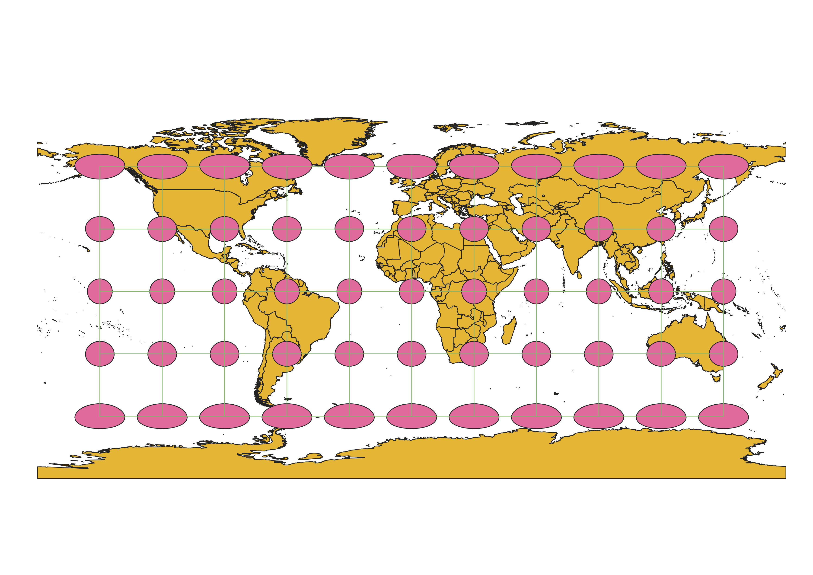
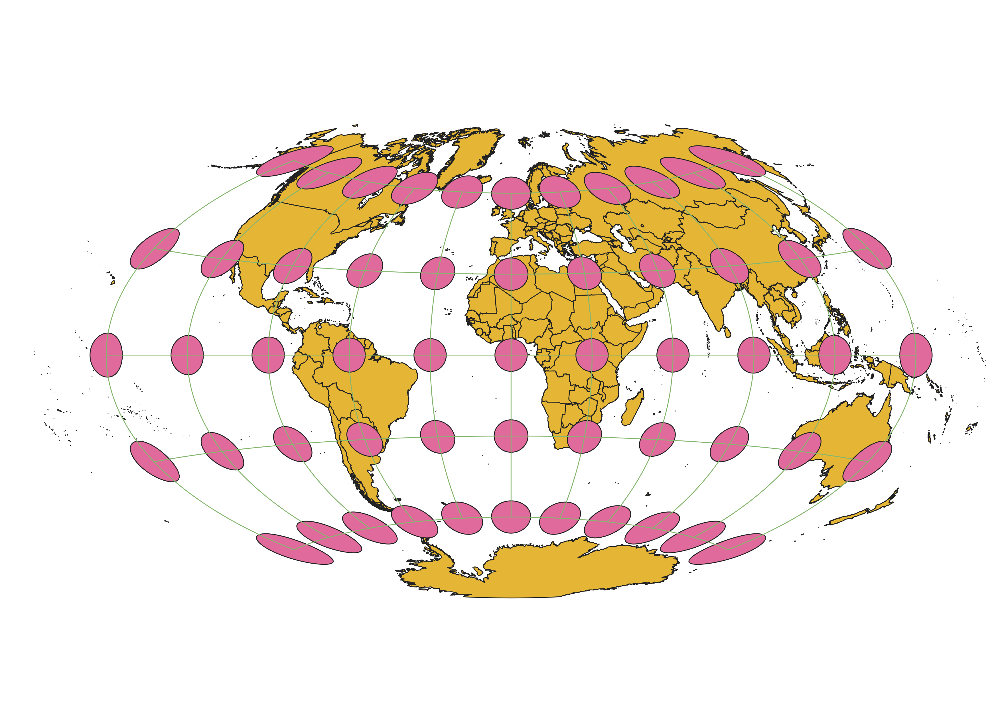
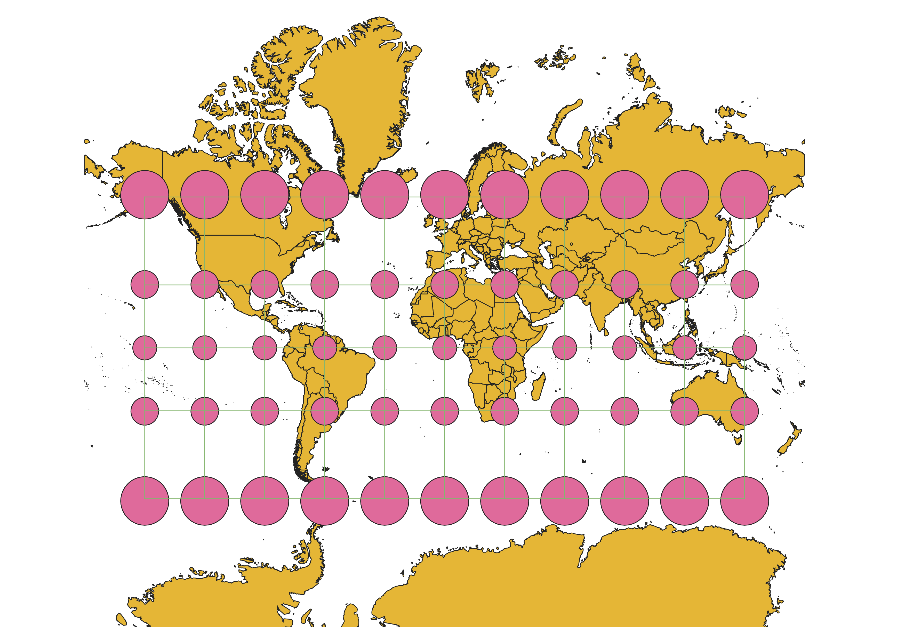
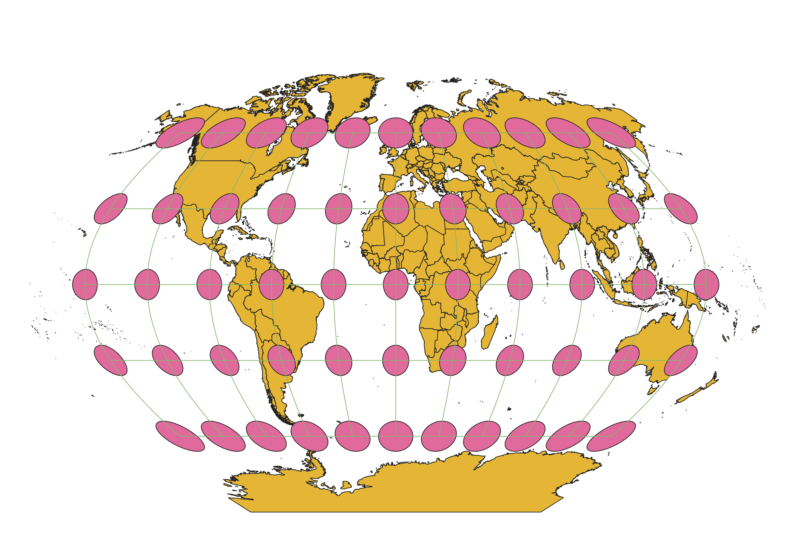
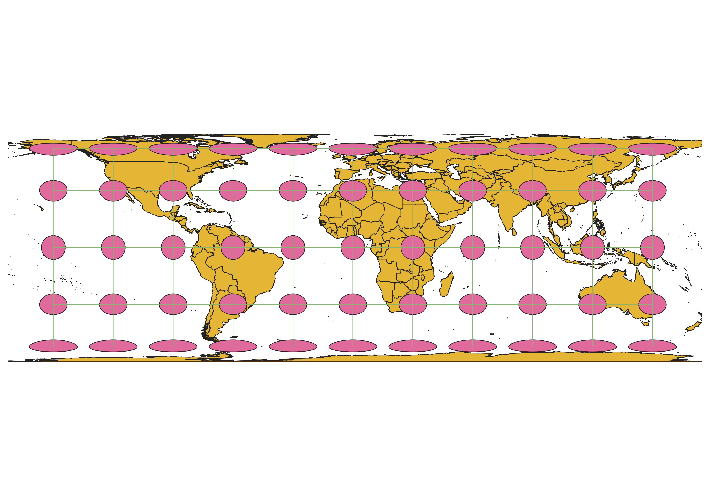
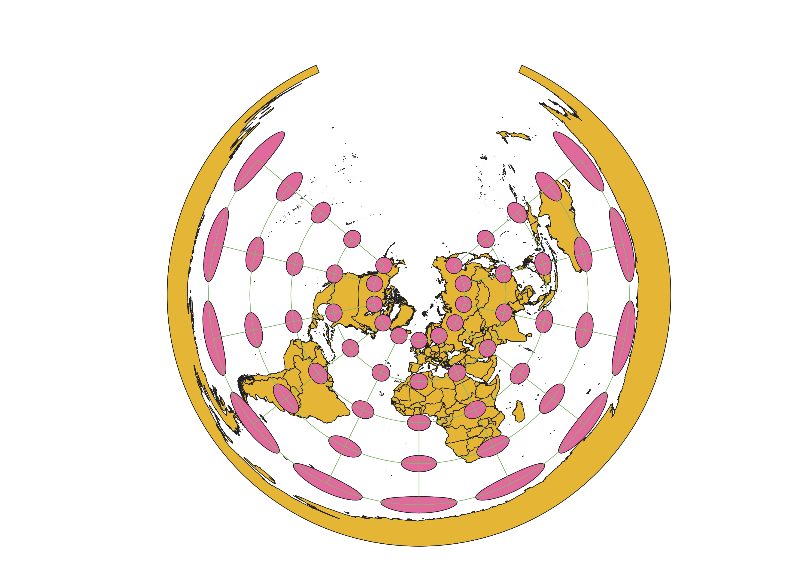
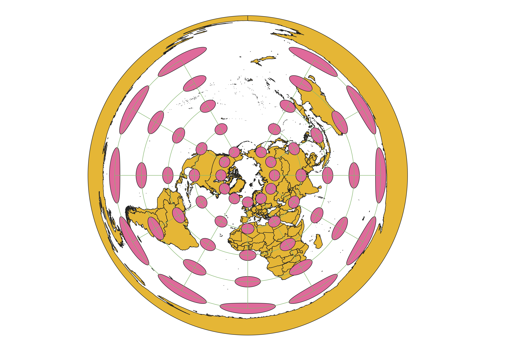
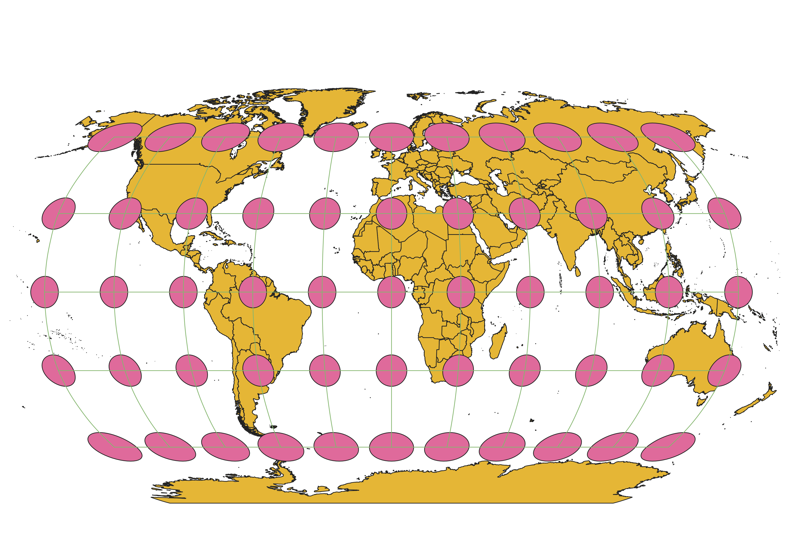
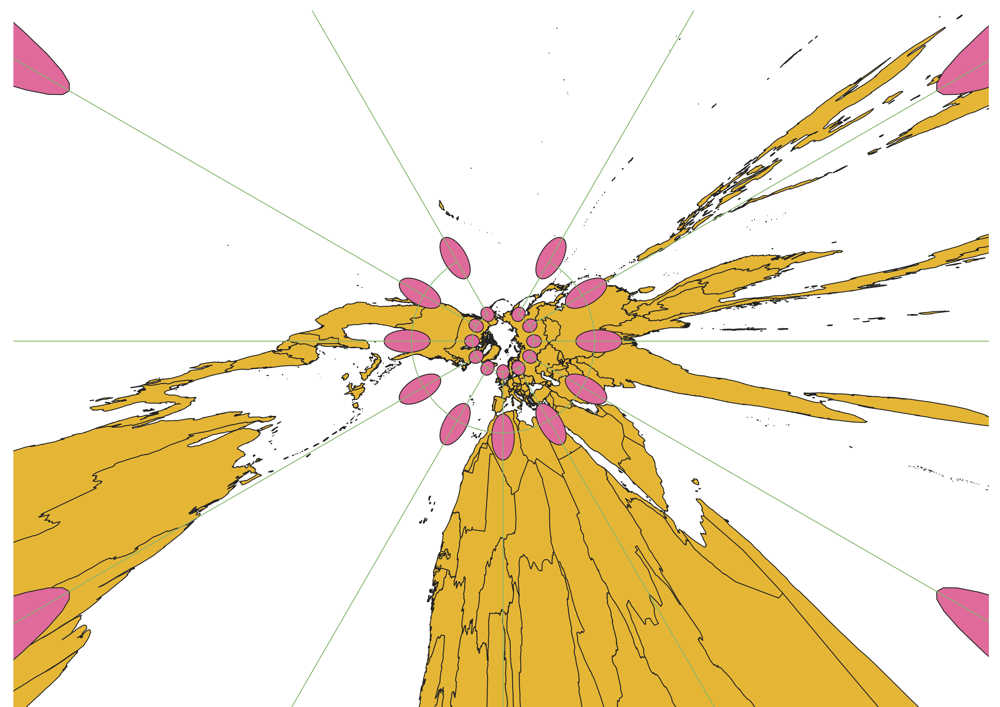

Homework 3: World Map Projections
How I displayed the map in different projections using QGIS
In order to change the projection of a world map in QGIS, I first downloaded a natural earth map. Then, I would go to the properties of the project and change the projection to various different types. Then, I used the Indicatrix plugin to display Tissot circles that would show how different projections have different distortions. I exported each projection using a new print layout on QGIS and downloaded them as a png to GitHub.
WGS84 Projection
This projection appears to conserve shape and area near the equator and become more distorted as as you move towards the poles. The latitudes and longitudes remain at right angles.

Aitoff Projection
This projection is a compromise between distortion of shape and area with the majority of the map under some sort of distortion. The map takes on an ellipse shape and the longitudes and latitudes appear curved.

ESPG 3857: Pseudo Mercator Projection
This projection effectively conserves shape, but distorts area as you move to the poles. The longitudinal and latitudinal lines form right angles.

ESPG 53018: Sphere Winkel I
This projection is relatively good at conserving area, especially near the equator, but it has some shape distortions. The longitudinal and latitudinal lines are curved. Additionally, this map appears more spherical than ellipsical.

ESPG 54034: World Cylindrical Equal Area
This projection conserves area, but at the cost of some severe shape distortions, especially near the poles. The map is in a rectangular shape.

ESPG 54027: World Equidistant Conic
This projection preserves distance along all meridians and two standard parallels. As you move away from the standard latitudes in the center of the map, distortion increases in both area and shape. This projection is ideal for areas running east to west.

ESPG 102016: North Pole Azimuthal Equidistant
This projection, is different from the world equidistant conic, in that it joins the end of the map together into a complete circle. The center of the map preserves shape and area, but distortion increases greatly as you move to latitudes further away from the center of the map.

ESPG 54030: World Robinson
This is a popular projection, used by National Geographic. This projection presents a good compromise between conserving area and shape. The map is in the shape of an ellipse with curved latitude and longitude lines displayed.

ESPG 102034: North Pole Gnomonic
This projection is unique in that there is no end to the map. The latitudes other than the standard latitudes do not appear on the map and just presents an infinite distortion. It conserves shape and area in the center of the map.

Data used for this project
Download Natrual Earth 1:10m Cultural Vector